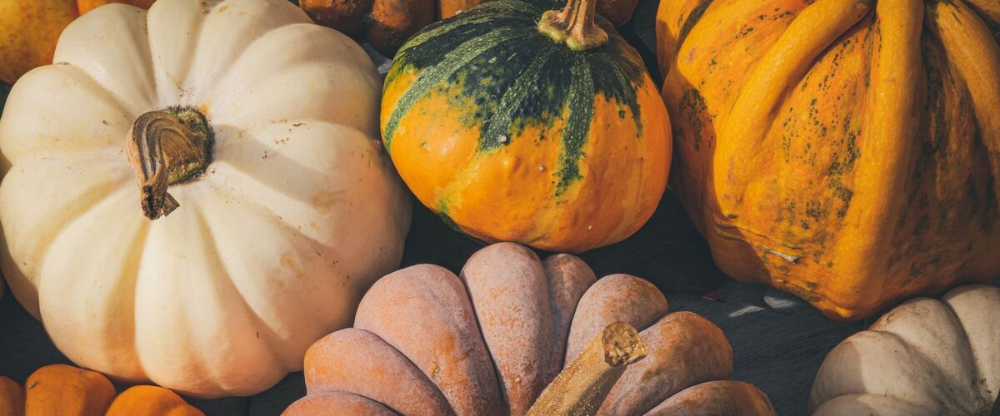

When to plant winter squash and pumpkins in Seattle and Tacoma, WA
Plant winter squash and pumpkins in the garden in Seattle and Tacoma May 10–31, either as seeds or as young plants started indoors Apr 12–19.
- Difficulty
- Moderate
- Sun
- Full sun
- Spacing
- 4 feet apart (vines spread)
- Planting depth
- 1 inch deep
- Frost
- Killed by frost
- First harvest
- About 100 days after planting
Why these dates
Seattle and Tacoma's typical last spring frost is March 2. Frost kills winter squash and pumpkins, and warm-season crops also need warm soil. Soil here stays cold for weeks after the last frost, so planting waits until about May 10.
West-side valleys. The Willamette Valley, Puget Sound and southern Oregon valleys. Long frost-free seasons, but soil stays cold and wet into May, so warm crops wait for warm soil, not just the last frost.
How to grow winter squash and pumpkins in Seattle and Tacoma
- Start seeds indoors Apr 12–19 in trays or small pots under a grow light or in your sunniest window. Or skip this step and buy young plants (starts) at a garden center.
- Harden off the young plants: about a week before planting, set them outside for a few hours a day, a little longer each day.
- Plant them in the garden May 10–31, 4 feet apart (vines spread). If you plant seeds instead, sow them 1 inch deep.
- Water deeply once or twice a week rather than a little every day, and mulch once the soil is warm.
- Harvest: Cut when the rind resists a fingernail and the stem is dry, before a hard frost. Cure in a warm room for two weeks.
Key numbers
- 85–110Days to ripen
- 60°F+Soil to sprout
- Mid-AugustLast useful flowers
- 6.0–7.5Soil pH
- 10 days at about 80°FCure
- 50–55°F, dryStore
How it works
The plant biology behind the advice above, in plain language.
Racing the season
Winter squash needs a long, warm season, often 85 to 110 days from sowing, and the fruit has to mature fully before fall rains and frost. Seeds need soil of at least 60°F to sprout, and plants stall below about 50°F. In the Northwest, that makes the choice of variety and an early, warm start the deciding factors.
Faster varieties like Delicata and small pie pumpkins ripen far more reliably here than big storage squash or giant pumpkins. Start seeds indoors two to three weeks before planting out, and lay black plastic mulch to warm the soil several degrees.
Pollination
Like zucchini, winter squash has separate male and female flowers, and bees carry the pollen. The first flowers are usually male and drop without fruiting. In cool weather, hand-pollinating in the morning helps fruit set early enough to ripen.
Focusing the plant
Flowers that open after about mid-August rarely have time to mature into ripe squash here. Once each vine has set two or three fruits, pinching off the vine tips and new flowers sends the plant's energy into ripening the squash you already have.
Soil, water and disease
Grow winter squash in rich, well-drained soil with a pH of about 6.0 to 7.5 and plenty of compost. Water deeply, about an inch a week, at the base of the plant. Powdery mildew shows up in late summer; resistant varieties and good spacing help, and squash that's already mature is rarely affected.
Ripeness, curing and storage
A ripe winter squash has a hard rind you can't dent with a fingernail, a dry, corky stem, and a spot where it rested on the soil that has turned cream or orange. Harvest before a hard frost, leaving a few inches of stem on.
Most types, including butternut, kabocha, buttercup and pumpkins, store better after curing for about 10 days somewhere warm, around 80°F. That hardens the skin and heals small wounds. Acorn and delicata don't need curing. Store squash at 50 to 55°F in a dry spot. Butternut and kabocha get sweeter for several weeks after harvest as starches turn to sugar; delicata and acorn are best eaten within a couple of months.
Common questions
When is the last frost in Seattle and Tacoma, WA?
Typically March 2. In 9 years out of 10, frost is over by March 23. These are 1991–2020 NOAA climate normals for Seattle-Tacoma International Airport.
Is it too late to plant winter squash and pumpkins in Seattle and Tacoma?
The spring planting window runs through May 31. Later plantings may not have time to produce before the first fall frost, which usually arrives around November 23.
When should I start winter squash and pumpkins from seed indoors in Seattle and Tacoma?
April 12 to April 19, which is 4 to 3 weeks before the May 10 planting date. Or buy young plants at a garden center instead.
How do I know when winter squash is ripe?
The rind is hard enough that a fingernail won't dent it, the stem is dry and corky, and the spot where it rested on the ground has turned cream or orange. Harvest before a hard frost.
Do I need to cure winter squash?
For most types, yes. Ten days somewhere warm, around 80°F, hardens the skin and helps them store for months. Acorn and delicata don't need it and are best eaten within a couple of months.
Why didn't my squash ripen before fall?
The variety was likely too slow for the season, or plants went out late. Choose fast varieties like Delicata, start seeds indoors, warm the soil with black plastic, and pinch off flowers that appear after mid-August.
Also plant in Seattle and Tacoma around the same time
Planting dates for winter squash and pumpkins in nearby areas
- Portland, OR May 10–31
- Gresham, OR May 10–31
- Wilsonville and Canby, OR May 10–31
- Salem, OR May 10–31
- Eugene, OR May 10–31
- Roseburg, OR May 10–31
Full planting calendar for Seattle and Tacoma · Winter squash and pumpkins in every city